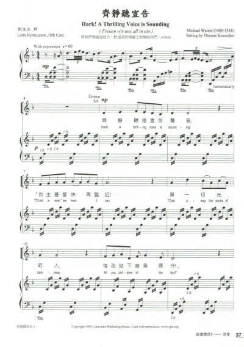

0478 Hark! A Thrilling Voice Is Sounding
齊靜聽宣告 MERTON
| 簡介
Hark! A thrilling voice is sounding! |
| Although earliest manuscript copy
dates from the tenth century, this text is possibly as old as the fifth
century. The hymn is most useful for Advent because it permits various
interpretations of Christ's coming. Stanzas 1-3 contain references to
Christ's first coming, but they can be used to celebrate his second
coming as well. Stanza 4 surely refers to the second coming, and stanza
5, the only stanza addressed to God, is a doxology. Liturgical
Use:
During Advent for worship services that stress Christ's second coming;
use stanza 5 as an Advent doxology.
|
| |
|
|
1 Hark! A thrilling voice is sounding!
"Christ is near," we hear it say.
"Cast away the works of darkness,
all you children of the day!"
2 Startled at the solemn warning,
from the darkness we arise;
Christ, our sun, all ill dispelling,
shines upon the morning skies.
3 See, the Lamb so long expected
comes with pardon down from heaven.
Let us haste, with tears of sorrow,
one and all, to be forgiven;
4 so when next he comes in glory
and the world is wrapped in fear,
he will shield us with his mercy
and with words of love draw near.
5 Honor, glory, might, dominion
to the Father and the Son,
with the everliving Spirit
while eternal ages run.
Source: Lift Up Your Hearts:
psalms, hymns, and spiritual songs #478
|
齊靜聽宣告
Hark! A Thrilling Voice is Sounding
曲：Michael Weisse
編：Thomas Keesecker
原詞：10世紀拉丁聖詩
粵詞：劉永生
齊靜聽這宣告聲音：「救主基督快再臨近！
願一切光明人， 悔改拋下暗黑罪行！」
全地今天都要警醒，奏起金曲獻聖詠；
在此美麗光亮黎明，染污的人要得潔淨！
來！跪拜己得勝主宰，凡人願信可得眞愛！
蒙救主將福樂降下來！我竟得饒恕到現在！
榮耀救主天上來臨，地與天空統統皆震撼！
耶穌親自賜下慈仁，救主親如我真良朋。
全地讚頌父神，(頌讚歌聲獻三一主！)
願向基督唱頌讚榮耀，(伏拜祂，三一主！)
願稱讚聖靈，(來唱歌三一主永在，)
要唱歌頌讚主到萬代，(是上帝賜福至今！)
要唱頌 Alleluia! A-men.
|
|

 |
| |
|
Hark! a thrilling voice is sounding
Translator: Edward Caswall
Tune: MERTON (Monk)
Published in 106
hymnals
https://hymnary.org/text/hark_a_thrilling_voice_is_sounding Hark! A
Thrilling Voice is Sounding (Merton)
Notes
Scripture References:
st. 1 = Rom. 13:11-12
st. 2 = 2 Pet. 1:19
st. 3 = John 1:29
st. 4 = Luke 21:25-28
st. 5 = Rev. 5:13
Although earliest
manuscript copy dates from the tenth century, this text is possibly as old
as the fifth century. It is based on the Latin hymn 'Vox clara ecce intonat"
and its 1632 revision "En clara vox redarguit." The text in the Psalter
Hymnal is a revision of both Edward Caswall's (PHH
438) translation in his Lyra Catholica (1849) and the
translation in Hymns Ancient and Modern (1861).

The hymn is most useful
for Advent because it permits various interpretations of Christ's coming.
Stanzas 1-3 contain references to Christ's first coming, but they can be
used to celebrate his second coming as well. Stanza 4 surely refers to the
second coming, and stanza 5, the only stanza addressed to God, is a
doxology.
Liturgical Use:
During Advent for worship services that stress Christ's second coming; use
stanza 5 as an Advent doxology.
--Psalter Hymnal
Handbook
MERTON (Monk)
Notes
William H. Monk (b.
Brompton, London, England, 1823; d. London, 1889) composed MERTON and
published it in The Parish Choir (1850). The tune has been
associated with this text since the 1861 edition of Hymns Ancient
and Modern. The tune's title is thought to refer to Walter de
Merton, founder of Merton College, Oxford, England.

Monk is best known for
his music editing of Hymns Ancient and Modern (1861, 1868,;
1875, and 1889 editions). He also adapted music from plainsong and added
accompaniments for Introits for Use Throughout the Year, a
book issued with that famous hymnal. Beginning in his teenage years,
Monk held a number of musical positions. He became choirmaster at King's
College in London in 1847 and was organist and choirmaster at St.
Matthias, Stoke Newington, from 1852 to 1889, where he was influenced by
the Oxford Movement. At St. Matthias, Monk also began daily choral
services with the choir leading the congregation in music chosen
according to the church year, including psalms chanted to plainsong. He
composed over fifty hymn tunes and edited The Scottish Hymnal (1872
edition) and Wordsworth's Hymns for the Holy Year (1862) as
well as the periodical Parish Choir (1840-1851).
MERTON consists of two
long lines. It has an attractive rising figure at the opening, and it
features consistent quarter-note rhythms. Sing the inner stanzas in a
subdued manner, rising on stanza 4 to prepare for the climactic doxology
in stanza 5. The hymn is suitable for part singing, but sing stanza 5 in
unison with a choir singing the descant; add trumpets if possible.
--Psalter Hymnal
Handbook, 1988
https://www.cuchicago.edu/globalassets/www-digital-team-media-files/documents-and-images/academics/centers-of-excellence/center-for-church-music/devotions/hymn-of-the-day-devotion---advent-3-2016.pdf
Advent 3
“Hark! A Thrilling Voice Is Sounding” (Lutheran Service Book #345)
If you have something important to communicate to someone, you first need to get
their
attention. And if you need to get someone’s attention quickly, there are a
number of approaches
you could take. Yes, there’s the always red exclamation point attached to the
email, or the allcaps text message. But what about when you’re when you’re
within sight or shouting distance of
the people who need to know the news you need to share? To get their attention,
perhaps you
whistle, wave your arms, or yell something.
There’s a lot of attention-getting that happens during the season of Advent, and
a lot of it is
carried out by John the Baptizer. While his choice of clothing and eating habits
may have gained
him attention, we remember him, of course, not only for who he was, but for whom
he was the
attention-getter. As John the Baptizer says in John the Evangelist’s gospel, in
the pericope for
this Sunday, “I am the voice of one crying out in the wilderness, ‘Make straight
the way of the
Lord,’ as the prophet Isaiah said.” (John 1:23 ESV) Throughout the season of
Advent, our
attention is turned to look for the coming Christ, and as our attention is
turned, so are our lives
are turned in repentance to receive the gifts that Christ brings. We “cast away
the works of
darkness” and “haste, with tears of sorrow” and receive the “pardon,” “mercy,”
and “words of
love” of our coming Savior.
Whoever was the 6th-or-7th -century-or-so writer of this hymn was also an
attention-getter. The archaic “Hark!” which begins this hymn—and which always
reminds me of that one Brady bunch episode, right?—is a translation of the
original Latin ecce, which seems to be the go-to
attention-getting word in that language. It can also be translated as “Lo!” or
“Here!” or
“Behold!” or “Look!” or “See!” It’s no accident that there are quite a few
Advent and Christmas
hymns that begin with these words. There is important news to share both in
anticipation of and
in response to “that birth forever blessed” (to quote another Latin hymn).
But just as John’s attention-getting dress and diet was not the point of it all
but rather a way of
pointing to his message and the point of his message, so the hymn-writer’s
attention-getting
“Hark!” serves as an opening to a hymn that is full of messages for us—images
and ideas taken
fairly directly from scripture. Hymnal companion commentaries on this hymn1
point out that almost every line of the Latin hymn is related to a passage from
scripture.
Consider the following connections between hymn and scripture and allow them to
lead you in
prayer and meditation, being assured that “Christ is near.”
Hark! A thrilling voice is sounding!
“Christ is near,” we hear it say.
“Cast away the works of darkness,
Besides this you know the time, that the hour has come for you to wake from
sleep. For salvation
is nearer to us now than when we first believed. The night is far gone; the day
is at hand. So then
let us cast off the works of darkness and put on the armor of light. (Romans
13:11-12)
All you children of the day!”
“I, Jesus, have sent my angel to testify to you about these things for the
churches. I am the root
and the descendant of David, the bright morning star.” (Revelation 22:16)
Startled at the solemn warning,
Let the earthbound soul arise;
Christ, its Sun, all sloth dispelling,
Shines upon the morning skies.
Arise, shine, for your light has come,
and the glory of the LORD has risen upon you.
For behold, darkness shall cover the earth,
and thick darkness the peoples;
but the LORD will arise upon you,
and his glory will be seen upon you.
And nations shall come to your light,
and kings to the brightness of your rising. (Isaiah 60:1-3)
See, the Lamb, so long expected,
The next day he saw Jesus coming toward him, and said, “Behold, the Lamb of God,
who takes
away the sin of the world! (John 1:29)
Comes with pardon down from heav’n.
For all have sinned and fall short of the glory of God, and are justified by his
grace as a gift,
through the redemption that is in Christ Jesus. (Romans 3:23-24)
Let us haste, with tears of sorrow,
One and all, to be forgiven.
Draw near to God, and he will draw near to you. Cleanse your hands, you sinners,
and purify
your hearts, you double-minded. Be wretched and mourn and weep. Let your
laughter be turned
to mourning and your joy to gloom. (James 4:8-9)
So, when next He comes in glory
And the world is wrapped in fear,
“And there will be signs in sun and moon and stars, and on the earth distress of
nations in
perplexity because of the roaring of the sea and the waves, people fainting with
fear and with
foreboding of what is coming on the world. For the powers of the heavens will be
shaken. And
then they will see the Son of Man coming in a cloud with power and great glory.
(Luke 21:25-
27)
He will shield us with His mercy,
And with words of love draw near.
He does not deal with us according to our sins,
nor repay us according to our iniquities.
For he knows our frame;
he remembers that we are dust. (Psalm 103:10, 14)
Honor, glory, might, dominion
To the Father and the Son
With the everlasting Spirit,
While eternal ages run!
P.S. Here is a link to a performance of my favorite arrangement of this hymn:
https://www.youtube.com/watch?v=ZyCZ2TFbDqk. It is composed by Richard Webster
and
published by Advent Press: http://www.advent-press.com/index.php/hymn-arrangements-withbrass/92-merton.
1
Joseph Herl and Morgan Simmons, “Hark! A thrilling voice is sounding,” The
Hymnal 1982 Companion, vol. 3A
(1994); Paul Westermeyer, “Hark! A Thrilling Voice Is Sounding,” Hymnal
Companion to Evangelical Lutheran
Worship (2010).
Jonathan Kohrs
River Forest IL
https://en.wikipedia.org/wiki/Vox_clara_ecce_intonat
From Wikipedia, the free encyclopedia
Jump to navigationJump
to search
Vox clara ecce intonat is a Latin hymn used
traditionally in the Liturgy
of the Hours at Lauds during Advent.[1] An
alternative version of the same hymn begins "En clara vox redarguit."[2]
History[edit]
The original version of the hymn dates from
the 6th century.[3] Whilst
it has been attributed to a number of different authors, including St
Ambrose, it is generally recorded in modern books as "anonymous."[4] As
a result of Pope
Urban VIII's revision of the Breviary,
the hymn was re-written in a more classical Latin style and published in
1632, with the opening line "En clara vox redarguit."[5]
The hymn is written in iambic dimeter[6] and
it is a retelling of the preaching of John
the Baptist, announcing the coming of Christ in Luke's
Gospel.
Latin versions
of the Hymn[edit]
|
Vox clara ecce intonat
1 VOX clara ecce intonat,
obscura quaeque increpat:
procul fugentur somnia;
ab aethere Christus promicat.
2 Mens iam resurgat torpida
quae sorde exstat saucia;
sidus refulget iam novum,
ut tollat omne noxium.
3 E sursum Agnus mittitur
laxare gratis debitum;
omnes pro indulgentia
vocem demus cum lacrimis,
4 Secundo ut cum fulserit
mundumque horror cinxerit,
non pro reatu puniat,
sed nos pius tunc protegat.
5 Summo Parenti gloria
Natoque sit victoria,
et Flamini laus debita
per saeculorum saecula. Amen.[7]
|
En clara vox redarguit
1 En clara vox redarguit
Obscura quaeque personans:
Procul fugentur somnia:
Ab alto Jesus promicat.
2 Mens jam resurgat torpida,
Non amplius jacens humi:
Sidus refulget jam novum,
Ut tollat omne noxium.
3 En Agnus ad nos mittitur
Laxare gratis debitum:
Omnes simul cum lacrimis
Precemur indulgentiam:
4 Ut, cum secundo fulserit,
Metuque mundum cinxerit,
Non pro reatu puniat,
Sed nos pius tunc protegat.
5 Virtus, honor, laus, gloria
Deo Patri cum Filio,
Sancto simul Paraclito,
In sæculorum saecula.[8]
|
English Versions[edit]
It is estimated that there are at least 27
English translations of the hymn.[9] The
following examples were widely used in the nineteenth and twentieth
century.
|
John Henry Newman
1 Hark, a joyful voice is
thrilling,
And each dim and winding way
Of the ancient temple filling ;
Dreams depart, for it is day.
2 Christ is coming — from thy bed,
Earth-bound soul, awake and spring —
With the sun new-risen to shed
Health on human suffering.
3 Lo, to grant a pardon free,
Comes a willing Lamb from heaven ;
Sad and tearful, hasten we,
One and all, to be forgiven.
4 Once again he comes in light
Girding earth with fear and woe ;
Lord, be thou our loving might,
From our guilt and ghostly foe.
5 To the Father and the Son
And the Spirit, who in heaven
Ever witness, Three and One,
Praise on earth be ever given.
|
John Mason Neale
1 A THRILLING voice by Jordan
rings,
rebuking guilt and darksome things:
vain dreams of sin and visions fly;
Christ in His might shines forth on high.
2 Now let each torpid soul arise,
that sunk in guilt and wounded lies;
see! the new Star's refulgent ray
shall chase disease and sin away.
3 The Lamb descends from heaven above
to pardon sin with freest love:
for such indulgent mercy shewn
with tearful joy our thanks we own.
4 That when again He shines revealed,
and trembling worlds to terror yield.
He give not sin its just reward,
but in His love protect and guard.
5 To the most high Parent glory be
and to the Son be victory,
and to the Spirit praise is owed
from age to age eternally. Amen[10]
|
Edward Caswall
1 Hark! a herald voice is calling:
'Christ is nigh,' it seems to say;
'Cast away the dreams of darkness,
O ye children of the day!'
2 Startled at the solemn warning,
Let the earth-bound soul arise;
Christ, her Sun, all sloth dispelling,
Shines upon the morning skies.
3 Lo! the Lamb, so long expected,
Comes with pardon down from heaven;
Let us haste, with tears of sorrow,
One and all to be forgiven;
4 So when next he comes with glory,
Wrapping all the earth in fear,
May he then as our defender
Of the clouds of heaven appear.
5 Honour, glory, virtue, merit,
To the Father and the Son,
With the co-eternal Spirit,
While unending ages run.[11]
|
The Caswell translation is often sung to the
tune Merton (87.87) by William Henry Monk.[12]
See also[edit]
https://en.wikipedia.org/wiki/Edward_Caswall
From Wikipedia, the free encyclopedia
Jump to navigationJump
to search
Edward Caswall, CO,
(15 July 1814 – 2 January 1878) was an Anglican clergyman
and hymn writer
who converted to Roman
Catholicism. His more notable hymns include: "Alleluia! Alleluia! Let
the Holy Anthem Rise"; "Come, Holy Ghost"; and "Ye Sons and Daughters of
the Lord".
He was born at Yateley,
Hampshire on 15 July 1814, the son of Rev. R. C. Caswall, sometime Vicar
of Yateley, Hampshire.[1]
Caswall was educated at Chigwell Grammar
School, Marlborough
Grammar School and Brasenose
College, Oxford, where he graduated Bachelor of Arts in 1836 with
honours and later proceeded to Master
of Arts. In 1838 he was ordained deacon, and in 1839 priest, in the
Church of England.[1] Before
leaving Oxford, he published, under the pseudonym of Scriblerus Redivivus, The
Art of Pluck, a satire on the ways of the careless college student.[2]
He was curate of the Church
of St Lawrence at Stratford-sub-Castle,
near Salisbury from 1840 to 1847. As curate, he would invite the children
who had attended morning services to the parsonage and give them
breakfast. On the anniversary on one's baptism, he would give some money
to buy clothes.[3] In
the summer of 1846 he, his wife, and his brother Tom visited Ireland.
He resigned his curacy and, in January 1847,
was received into the Roman Catholic Church by Cardinal
Acton at Rome. His brother Tom had converted to Catholicism
previously. Caswall's conversion caused an estrangement from some members
of his family, including his mother and brother Alfred. His wife, Louisa
Stuart Caswall, who had also become a Catholic, died of cholera on 14
September 1849 while they were staying at Torquay.[3] The
following year Caswall joined the Oratory
of St. Philip Neri under future Cardinal Newman,
to whose influence his conversion to Roman Catholicism was due. He was
ordained a Catholic priest in 1852. Caswall was delegated the
responsibility of establishing the Oratory school, which opened in 1859.
He often served as Acting Superior in Newman's absence.
He died at the
Oratory, Edgbaston,
near Birmingham on
2 January 1878 and was buried at Rednal,
near Bromsgrove, Worcestershire.[1]
He wrote original poems that have survived
mainly in Catholic hymnals due to a clear adherence to Catholic doctrine.
Caswall is best known for his translations from the Roman
Breviary and other Latin sources, which are marked by faithfulness to
the original. Most of the translations were done at the Oratory of St.
Philip Neri at Edgbaston.[2] They
were published in Lyra Catholica, containing all the breviary and missal hymns (London,
1849); The Masque of Mary (1858); and A May Pageant and other
poems (1865). Hymns and Poems (1873) are the three books
combined, with many of the hymns rewritten or revised. Some of his
translations are used in the Hymns
Ancient and Modern.[4]
According to hymnologist John
Julian, Caswall's translations featured an especial purity of rhythm,
which made his hymns easy to set to music and easy for congregations to
sing.[2] His
widely used hymn texts and
translations include
"See,
amid the Winter's Snow",
"Alleluia! Alleluia! Let the Holy Anthem Rise";
"Come, Holy Ghost";
"Earth
Has Many A Noble City";
"Jesus, the Very Thought of Thee";
"When Morning Gilds the Skies";
"Sleep, Holy Babe" and
"Ye Sons and Daughters of the Lord".[5]
References